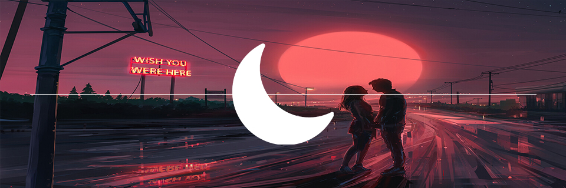
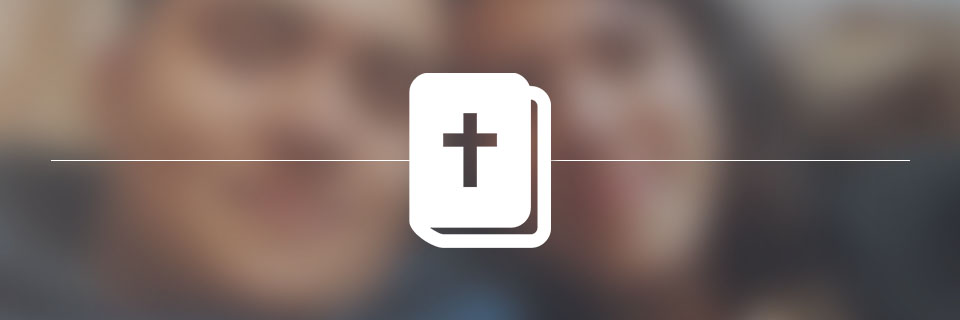
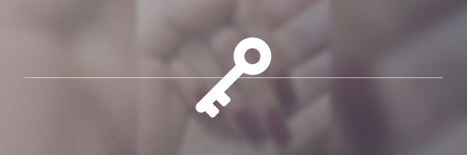

¿Luna?

No te prometo bajarte la luna, ni siquiera una estrella, no te puedo subir al cielo, soy imperfecto, débil, mortal, lo único que puedo ofrecerte es mi calidez, mi seguridad, mi confianza, y sobre todas esas cosas... mi corazón, el cual es uno con Dios, él nos subirá a los dos al cielo, no nos bajará la luna, tomados de la mano la conoceremos, cada suspiro generará una estrella nueva, llamada recuerdo.
Cada que mires el cielo, cada que veas una estrella, es un te quiero de mi parte, podremos encontrarnos muy lejos, a miles de kilómetros, pero estes donde estés, me podrás encontrar donde mismo, solo tienes que voltear arriba, la distancia nos tendrá lejos, pero el señor nos tendra cerca.
Tiempo
Parece que nunca llegará el día, pero sabemos que llegará.
Así como un día nos dijimos el primer "te quiero", llegará el día en que me digas "acepto".
Cuando veo a futuro, solo puedo ver qué será bueno, ya que tú estas ahí.
Un día nos tendremos que separar, pero también un día nos uniremos, para siempre.
La insertidumbre de esperar me causa angustia, pero el tomar tu mano la calma.
La distancia me causa dolor, pero con cada mensaje tuyo me siento contento.
Solía sentirme solo, y así esperaba morir, ahora se que tendré la mejor compañía que pueda existir.
Solía quejarme, por tener que esperar, pero al reflejarme en tus ojos, se que valdrá la pena hacerlo.
Biblia
En esta sección me tomé la libertad de poner algunos versículos que me recuerdan a ti.

Mujer virtuosa, ¿quién la hallará? Porque su estima sobrepasa largamente a la de las piedras preciosas.
Proverbios 31:10 RVR1960
No, no vales un simple te quiero, no eres solo una linda persona, no eres una "bonita compañía", eres más que una joya.
Más preciosa es que las piedras preciosas; Y todo lo que puedes desear, no se puede comparar a ella.
Proverbios 3:15 RVR1960
Eres lo más preciado que existe, nada se compara contigo, un te quiero tuyo me llena más que todos mis logros.
La casa y las riquezas son herencia de los padres; Mas de Jehová la mujer prudente.
Proverbios 19:14 RVR1960
Siempre me e considerado un consentido de Dios, y ahora más, tu eres un regalo que el señor tenía planeado para mí.
Para terminar, así te veo, me haces bien, me inspiras confianza, para todos los días de mi vida.
El corazón de su marido está en ella confiado, Y no carecerá de ganancias. Le da ella bien y no mal Todos los días de su vida.
Proverbios 31:11-12 RVR1960
Llave

Solo tú conoces mi verdadero yo, eres la única persona que puede confirmar que no soy frío, solo contigo me siento confiado, acompañado, lograste entrar a mi corazón, nadie más, me has escuchado llorar, y no me juzgaste, te he contado mis problemas, me comprendiste y me acompañaste.
Este topico se llama "llave", ya que siento que tienes una, con la que pudiste entrar a mi persona, lamento decirte que así como entraste, ya no podrás salir, te llevo conmigo, y no, no te pienso tomar en cuenta para el futuro, eso se quedaría muy corto, eres mi prioridad.